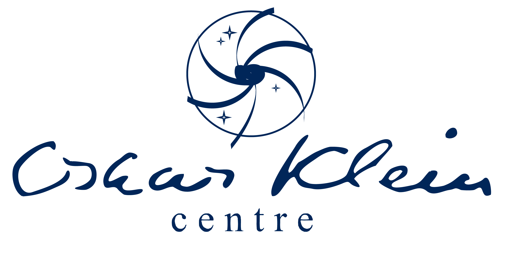

2024 — current: Postdoc
University of Turin and INFN

2020 — 2024: PhD in Theoretical and Computational Astroparticle Physics
Stockholm University & The Oskar Klein Center, Sweden.
PhD Thesis:
How The Positron Became Cool: A Study of Cosmic-Ray Positrons From Pulsars and Dark Matter
Supervisor: Tim Linden
2019 — 2020: Technical Student
Beam and Accelerator Group, CERN, Geneva, Switzerland.
Report:
Space charge and intrabeam scattering effects for Lead-ions and Oxygen-ions in the LHC injector chain.
Supervisors: Yannis Papaphilippou and Hannes Bartosik
2019 — 2019: Assistant
Detector Group, European Spallation Source (ESS), Lund, Sweden.
Supervisors: Richard Hall-Wilton and Ramsey Al Jebali
2017 — 2019: Master of Science in Physics
Lund University, Sweden.
Master Thesis:
Study of Dark Matter Models in Astrophysics and Particle Physics.
Supervisors: Caterina Doglioni and Antonio Boveia.
2016 — 2016: Erasmus Exchange
University of Edinburgh, United Kingdom.
2014 — 2017: Bachelor of Science in Physics
Lund University, Sweden.
Bachelor Thesis:
Summarising Constraints On Dark Matter At The Large Hadron Collider
Supervisor: Caterina Doglioni